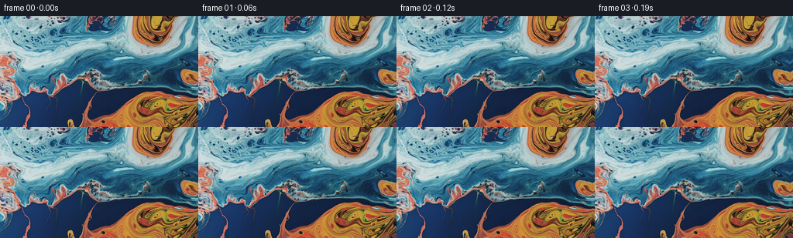
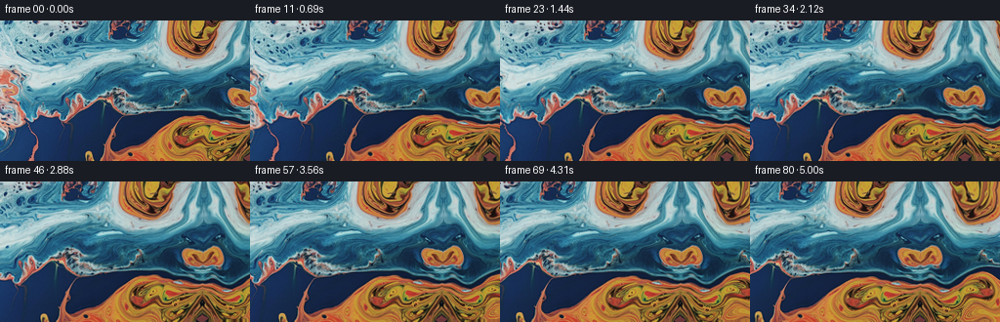
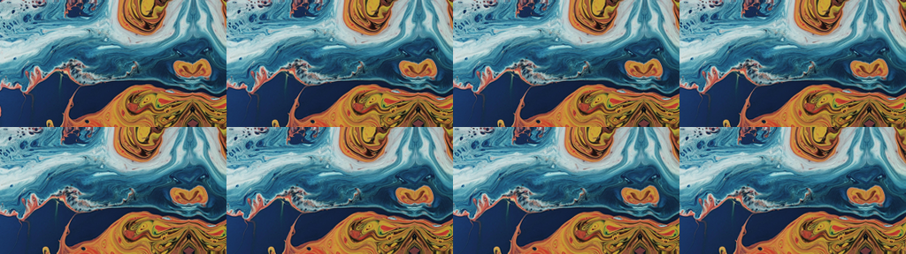
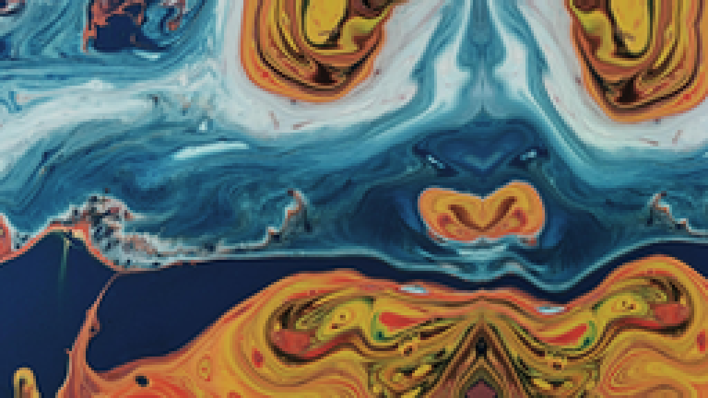

← 本轮 smoke 总览traex/DeepSeek-V4.1-Flash · 0002_s0
vision-agent · 256×144 · 16.0 FPS · 81 帧 · 状态 complete · 输出 tokens 15170
原始任务a close up of a blue and orange liquid, camera pans right
当前保存结果
已保存候选与代码修改
这里按时间展示外部捕获的候选，每份均可单独播放。保存新版本不等于完成视觉检查；下方工具证据记录实际看过的图。
候选 01 · 2026-11-09T00:15:49.423775+00:00 · 点开播放与检查图
inspection.png

transition_check.png

代码变化
--- 上一保存版本
+++ 本次保存版本
@@ -0,0 +1,140 @@
+"""Generate a close-up marbled-liquid camera pan from first_frame.png."""
+
+from pathlib import Path
+
+import cv2
+import numpy as np
+from PIL import Image
+
+import artifact_io
+
+
+WIDTH = 256
+HEIGHT = 144
+FRAMES = 81
+FPS = 16
+PAN_PIXELS = 82.0
+PANORAMA_WIDTH = 384
+
+
+def smoothstep(value):
+ value = np.clip(value, 0.0, 1.0)
+ return value * value * (3.0 - 2.0 * value)
+
+
+def extend_liquid(image):
+ """Continue the fluid beyond the right edge with a sheared mirror."""
+ xx = np.arange(PANORAMA_WIDTH, dtype=np.float32)[None, :]
+ yy = np.arange(HEIGHT, dtype=np.float32)[:, None]
+
+ original_x = np.broadcast_to(xx, (HEIGHT, PANORAMA_WIDTH))
+ original_y = np.broadcast_to(yy, (HEIGHT, PANORAMA_WIDTH))
+
+ distance = np.maximum(xx - (WIDTH - 1), 0.0)
+ extension_x = (WIDTH - 1) - distance
+ extension_y = (
+ yy
+ + 7.0 * np.sin(distance / 18.0 + yy / 31.0) * smoothstep(distance / 24.0)
+ + 2.5 * np.sin(distance / 8.5 + 0.8) * smoothstep(distance / 12.0)
+ )
+
+ map_x = np.where(xx < WIDTH, original_x, extension_x).astype(np.float32)
+ map_y = np.where(xx < WIDTH, original_y, extension_y).astype(np.float32)
+ panorama = cv2.remap(
+ image,
+ map_x,
+ map_y,
+ interpolation=cv2.INTER_CUBIC,
+ borderMode=cv2.BORDER_REFLECT_101,
+ )
+
+ # A restrained color drift prevents the continuation reading as a literal mirror.
+ fade = smoothstep(distance / 46.0)
+ color_wave = np.stack(
+ [
+ 1.0 + 0.030 * fade * np.sin(distance / 15.0 + yy / 42.0),
+ 1.0 + 0.018 * fade * np.sin(distance / 21.0 - yy / 36.0 + 1.4),
+ 1.0 + 0.012 * fade * np.sin(distance / 26.0 + yy / 51.0 + 2.1),
+ ],
+ axis=-1,
+ )
+ panorama = np.clip(panorama.astype(np.float32) * color_wave, 0.0, 255.0)
+
+ # Keep the source half untouched so frame zero remains pixel-identical.
+ panorama[:, :WIDTH] = image
+ return panorama.astype(np.uint8)
+
+
+def vortex_displacement(x, y, cx, cy, radius, strength):
+ dx = x - cx
+ dy = y - cy
+ weight = np.exp(-(dx * dx + dy * dy) / (2.0 * radius * radius))
+ return (
+ strength * (-dy / radius) * weight,
+ strength * (dx / radius) * weight,
+ )
+
+
+def render_frame(panorama, frame_index):
+ if frame_index == 0:
+ return panorama[:, :WIDTH].copy()
+
+ time = frame_index / (FRAMES - 1)
+ env = smoothstep(time / 0.16)
+ y, x = np.mgrid[0:HEIGHT, 0:WIDTH].astype(np.float32)
+
+ pan = PAN_PIXELS * time
+ sx = x + pan
+ sy = y.copy()
+
+ # Two broad travelling waves make the surface itself move slowly.
+ sx += env * (
+ 1.45 * np.sin(x / 34.0 + y / 47.0 - time * 2.1)
+ + 0.75 * np.sin(x / 17.0 - y / 29.0 + time * 1.3 + 0.6)
+ )
+ sy += env * (
+ 1.20 * np.sin(y / 25.0 - x / 51.0 + time * 1.8)
+ + 0.60 * np.sin(x / 23.0 + y / 18.0 - time * 1.1 + 1.7)
+ )
+
+ # Local vortices curl the paint around three large color boundaries.
+ vortices = (
+ (91.0 + 5.0 * np.sin(time * 1.7), 66.0, 48.0, 1.55),
+ (210.0 - 7.0 * np.cos(time * 1.3), 112.0, 42.0, 1.25),
+ (39.0 + 4.0 * np.sin(time * 1.1 + 1.2), 103.0, 35.0, 0.90),
+ )
+ for cx, cy, radius, strength in vortices:
+ vx, vy = vortex_displacement(x, y, cx, cy, radius, strength * env)
+ sx += vx
+ sy += vy
+
+ # A slight sheen follows the moving low-frequency flow.
+ phase = np.sin(x / 61.0 + y / 38.0 - time * 2.4)
+ shimmer = 1.0 + 0.012 * env * phase
+
+ sample_x = np.clip(sx, 0.0, PANORAMA_WIDTH - 1.001)
+ sample_y = np.clip(sy, 0.0, HEIGHT - 1.001)
+ warped = cv2.remap(
+ panorama,
+ sample_x,
+ sample_y,
+ interpolation=cv2.INTER_CUBIC,
+ borderMode=cv2.BORDER_REFLECT_101,
+ )
+ return np.clip(warped.astype(np.float32) * shimmer[..., None], 0.0, 255.0).astype(np.uint8)
+
+
+def main():
+ case_dir = Path(__file__).resolve().parent
+ source = np.asarray(Image.open(case_dir / "first_frame.png").convert("RGB"))
+ if source.shape != (HEIGHT, WIDTH, 3):
+ raise ValueError(f"Expected {(HEIGHT, WIDTH, 3)}, got {source.shape}")
+
+ panorama = extend_liquid(source)
+ frames = np.stack([render_frame(panorama, i) for i in range(FRAMES)])
+ frames[0] = source
+ artifact_io.save(frames, case_dir)
+
+
+if __name__ == "__main__":
+ main()
可观测工具行为
命令 1 · 2026-11-09T00:14:47.889600+00:00/bin/bash -c "pwd && rg --files -g '"'!*.mp4'"' -g '"'!*.png'"' -g '"'!*.jpg'"' | sort | sed -n '1,160p'"
exit 0 命令 2 · 2026-11-09T00:14:48.061489+00:00/bin/bash -c "sed -n '1,240p' prompt.txt"
exit 0 命令 3 · 2026-11-09T00:14:48.235872+00:00/bin/bash -c "sed -n '1,280p' GENERATION_RULES.md"
exit 0 命令 4 · 2026-11-09T00:14:48.519320+00:00/bin/bash -c 'ls -la && file first_frame.png && identify first_frame.png 2>/dev/null || true'
exit 0 命令 5 · 2026-11-09T00:14:58.744274+00:00/bin/bash -c "sed -n '1,260p' artifact_io.py"
exit 0 命令 6 · 2026-11-09T00:14:59.036124+00:00/bin/bash -c "cat task_spec.json && printf '\\n--- template ---\\n' && sed -n '1,260p' player_template.html"
exit 0 命令 7 · 2026-11-09T00:14:59.732650+00:00/bin/bash -c "command -v ffmpeg || true; command -v python3; python3 - <<'PY'
mods=['numpy','PIL','cv2','scipy','imageio','skimage']
for m in mods:
try:
x=__import__(m)
print(m, getattr(x,'__version__','ok'))
except Exception as e:
print(m, 'MISSING', type(e).__name__)
PY"exit 0 命令 8 · 2026-11-09T00:14:59.919122+00:00/bin/bash -c "python3 - <<'PY'
from PIL import Image
import numpy as np
im=Image.open('first_frame.png')
print(im.mode, im.size, im.format)
a=np.asarray(im.convert('RGB'))
print(a.shape,a.dtype,a.min(),a.max(),a.mean((0,1)))
for y in [0,24,48,72,96,120,143]:
print(y, a[y,::32].tolist())
PY"exit 0 命令 9 · 2026-11-09T00:15:45.286664+00:00/bin/bash -c 'python3 generate.py'
exit 0 命令 10 · 2026-11-09T00:15:50.533741+00:00/bin/bash -c "python3 - <<'PY'
from pathlib import Path
from PIL import Image
import numpy as np
src=np.asarray(Image.open('first_frame.png').convert('RGB'))
frames=np.stack([np.asarray(Image.open(f'frames/{i:02d}.png')) for i in range(81)])
print('shape/dtype', frames.shape, frames.dtype)
print('frame0 exact', np.array_equal(frames[0],src), 'maxdiff', np.abs(frames[0].astype(int)-src).max())
d=np.abs(np.diff(frames.astype(np.int16),axis=0))
print('temporal abs mean/p95/max',d.mean(),np.percentile(d,95),d.max())
print('frame diff means', [round(x,2) for x in d.mean((1,2,3))[::8]])
print('pixel range', frames.min(),frames.max())
print('files', [(p.name,p.stat().st_size) for p in [Path('pixels.npz'),Path('index.html'),Path('inspection.png')]])
PY"exit 0 命令 11 · 2026-11-09T00:15:56.464790+00:00/bin/bash -c "python3 - <<'PY'
from PIL import Image
import numpy as np
ims=[Image.open(f'frames/{i:02d}.png') for i in [0,20,40,60,80]]
out=Image.new('RGB',(256*5,144),(0,0,0))
for i,im in enumerate(ims): out.paste(im,(i*256,0))
out.resize((256*5*2,288),Image.Resampling.NEAREST).save('.tmp/keyframes.png')
PY"exit 0 命令 12 · 2026-11-09T00:16:04.324495+00:00/bin/bash -c "python3 - <<'PY'
from PIL import Image
import numpy as np
# Check exact in-place continuity after correcting for the intended pan.
frames=np.stack([np.asarray(Image.open(f'frames/{i:02d}.png')) for i in range(81)]).astype(np.float32)
for i,j in [(0,1),(20,21),(40,41),(60,61),(79,80)]:
a=frames[i][:,10:240]; b=frames[j][:,10:240]
# rough shift expected (PAN_PIXELS / 80)
dx=82/80
M=np.float32([[1,0,-dx],[0,1,0]])
import cv2
bw=cv2.warpAffine(b,M,(a.shape[1],a.shape[0]))
print(i,j,'mean',np.abs(a-b).mean(),'corrected',np.abs(a[4:-4]-bw[4:-4]).mean())
PY"exit 0 命令 13 · 2026-11-09T00:16:08.300619+00:00/bin/bash -c "python3 - <<'PY'
from PIL import Image
import numpy as np
ims=[Image.open(f'frames/{i:02d}.png') for i in [36,37,38,39,40,41,42,43]]
out=Image.new('RGB',(256*4,144*2),(0,0,0))
for i,im in enumerate(ims): out.paste(im,((i%4)*256,(i//4)*144))
out.save('.tmp/consecutive.png')
PY"exit 0 命令 14 · 2026-11-09T00:16:22.103346+00:00/bin/bash -c "python3 - <<'PY'
from PIL import Image
im=Image.open('frames/80.png')
im.resize((1024,576),Image.Resampling.NEAREST).save('.tmp/frame80_4x.png')
PY"exit 0 命令 15 · 2026-11-09T00:16:28.981005+00:00/bin/bash -c "python3 - <<'PY'
import numpy as np
from PIL import Image
from generate import extend_liquid
src=np.asarray(Image.open('first_frame.png'))
p=extend_liquid(src)
Image.fromarray(p).save('.tmp/panorama.png')
PY"exit 0 命令 16 · 2026-11-09T00:16:40.829119+00:00/bin/bash -c "python3 -m py_compile generate.py && python3 - <<'PY'
from pathlib import Path
import json, re
import numpy as np
from PIL import Image
p=Path('.')
spec=json.loads((p/'task_spec.json').read_text())
with np.load(p/'pixels.npz') as z:
packed=z['pixels']
print('pixels.npz', packed.shape, packed.dtype)
assert packed.shape == (spec['height'], spec['width'], spec['frames'])
assert packed.dtype == np.uint32
first=(packed[:,:,0] >> 16) | (packed[:,:,0] & 0xff00) | ((packed[:,:,0] & 0xff) << 16)
# Decode packed RGB and compare canonical first frame.
rgb=np.stack([(packed>>16)&255,(packed>>8)&255,packed&255],axis=-1).transpose(2,1,0,3).astype(np.uint8)
assert np.array_equal(rgb[0],np.asarray(Image.open('first_frame.png').convert('RGB')))
assert len(list((p/'frames').glob('*.png'))) == spec['frames']
html=(p/'index.html').read_text()
assert 'window.__pixelReady=true' in html and '\"frames\":81' in html
print('contract: OK')
print('frame files:',len(list((p/'frames').glob('*.png'))))
print('outputs:', ', '.join(str(x) for x in ['generate.py','pixels.npz','index.html','inspection.png']))
PY"exit 1 命令 17 · 2026-11-09T00:16:45.944458+00:00/bin/bash -c "python3 - <<'PY'
from pathlib import Path
import json
import numpy as np
from PIL import Image
p=Path('.')
spec=json.loads((p/'task_spec.json').read_text())
with np.load(p/'pixels.npz') as z:
packed=z['pixels']
print('pixels.npz', packed.shape, packed.dtype)
assert packed.shape == (spec['height'], spec['width'], spec['frames'])
assert packed.dtype == np.uint32
rgb=np.stack([(packed>>16)&255,(packed>>8)&255,packed&255],axis=-1).transpose(2,0,1,3).astype(np.uint8)
assert rgb.shape == (spec['frames'],spec['height'],spec['width'],3)
assert np.array_equal(rgb[0],np.asarray(Image.open('first_frame.png').convert('RGB')))
assert len(list((p/'frames').glob('*.png'))) == spec['frames']
html=(p/'index.html').read_text()
assert 'window.__pixelReady=true' in html and '\"frames\":81' in html
print('contract: OK')
print('frame files:',len(list((p/'frames').glob('*.png'))))
print('outputs:', ', '.join(str(x) for x in ['generate.py','pixels.npz','index.html','inspection.png']))
PY"exit 0 视觉工具实际返回图片 1

视觉工具实际返回图片 2

视觉工具实际返回图片 3
视觉工具实际返回图片 4

视觉工具实际返回图片 5

视觉工具实际返回图片 6
保存候选 1 份；完成命令 17 次；可验证图片返回 6 张。原始 API 响应与完整日志保留在本地。